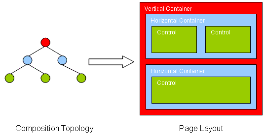
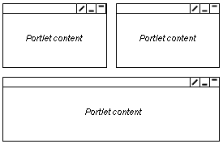

|
||||||||||
| PREV CLASS NEXT CLASS | FRAMES NO FRAMES | |||||||||
| SUMMARY: NESTED | FIELD | CONSTR | METHOD | DETAIL: FIELD | CONSTR | METHOD | |||||||||
public interface LayoutModel<E extends java.lang.Object & LayoutNode>
This interface provides a tree model for the layout of a page. The nodes of the tree
are objects implementing the LayoutNode interface. This model
describes the layout of a page (row and column containers, LayoutContainer)
and the content (controls representing portlets, LayoutControl).
Here is an example of how page layout information and page content is represented. The following figure depicts a page with three portlets. The surrounding vertical and horizontal containers define the layout while the controls hold the portlets that provide the actual content presented to the user:

On the right-hand side of the figure the resulting topology is shown that can be queried from the layout model belonging to this page. If this model would be rendered, this would be the result of the page information (navigation information, surrounding page output is left out of this figure):

The layout model is searchable; this means it provides a Locator.
This allows to search elements of the model by ObjectID and unique name.
This model may implement other locators as well, for example the ControlLocator.
The active flag meaning is identical to that of the corresponding ContentPage.
The layout of a page may be composed not only of information originating from the page
itself, but also from other existing pages. In this case, the layout is called "layered", since
it is built from a list of layouts. The methods
getAllowedPortlets(), getAllPortletsAllowedFlag(),
getDeletableFlag(Object) and getModifiableFlag(Object) apply to the last layer
of the layout model used (there is always at least one layer). Then there are the methods
getAllAllowedPortlets(), isAllPortletsAllowed(), isDeletable(Object)
and isModifiable(Object), which apply to all layers combined, i.e. these methods
need to be used to get an absolute statement on whether all portlets can be placed into this
layout and - if not - what the list of allowed portlets is, whether a node is deleteable and
whether a node is modifiable in this layout model.
LayoutNode| Method Summary | |
|---|---|
ListModel<ObjectID> |
getAllAllowedPortlets()
Returns a list of object IDs of portlet definitions that are allowed for this layout model. |
ListModel<ObjectID> |
getAllowedPortlets()
Returns a list of object IDs of portlet definitions that are allowed for this layout model. |
boolean |
getAllPortletsAllowedFlag()
Indicates whether all portlets are allowed for this layout model which may be part of a (explicit) derivation hierarchy. |
boolean |
getDeletableFlag(E aNode)
Returns the deletable flag set for this node. |
boolean |
getModifiableFlag(E aNode)
Returns the modifiable flag set for this node. |
ObjectID |
getObjectID()
Returns the object ID of the ContentPage
which was used to retrieve this layout model. |
Theme |
getTheme()
Deprecated. use this method on the corresponding ContentPage |
boolean |
hasContainerChild(E aNode)
Checks whether the given node has a container as a child. |
boolean |
hasControlChild(E aNode)
Checks whether the given node has a control as a child. |
boolean |
isActive()
Deprecated. use this method on the corresponding ContentPage |
boolean |
isAllPortletsAllowed()
Indicates whether all portlets are allowed for this layout model. |
boolean |
isBookmarkable()
Deprecated. use this method on the corresponding ContentPage, if implemented (optional) |
boolean |
isDeletable(E aNode)
Indicates whether this node can be deleted or not. |
boolean |
isModifiable(E aNode)
Indicates whether this node can be modified or not. |
boolean |
isShareable()
Deprecated. use this method on the corresponding ContentPage, if implemented (optional) |
| Methods inherited from interface com.ibm.portal.Invalidatable |
|---|
invalidate, invalidate |
| Methods inherited from interface com.ibm.portal.TreeModel |
|---|
getChildren, getParent, getRoot, hasChildren |
| Methods inherited from interface com.ibm.portal.LocatorProvider |
|---|
getLocator |
| Methods inherited from interface com.ibm.portal.TimeStamped |
|---|
getCreated, getLastModified |
| Methods inherited from interface com.ibm.portal.wire.WireModelProvider |
|---|
getWireModel |
| Method Detail |
|---|
boolean isDeletable(E aNode)
aNode - the node to check
true if the node can be deleted, false
otherwiseboolean getDeletableFlag(E aNode)
isDeletable.
aNode - the node whose deletable flag is to be returnedboolean isModifiable(E aNode)
aNode - the node to check
true if the node can be modified, false
otherwiseboolean getModifiableFlag(E aNode)
isModifiable.
aNode - the node whose modifiable flag is to be returnedboolean isAllPortletsAllowed()
false, then this method will return
false as well.
true if all portlets are allowed,
false otherwise. in that case
getAllAllowedPortlets can be used to retrieve the actual list
of permitted portlets.getAllPortletsAllowedFlag()boolean getAllPortletsAllowedFlag()
true if all portlets are allowed,
false otherwise. in that case
getAllowedPortlets can be used to retrieve the actual list
of permitted portlets.isAllPortletsAllowed()
ListModel<ObjectID> getAllowedPortlets()
throws DataException
null.
DataException - if an error occured while accessing the databasegetAllAllowedPortlets()
ListModel<ObjectID> getAllAllowedPortlets()
throws DataException
null.
DataException - if an error occured while accessing the databasegetAllowedPortlets()boolean hasContainerChild(E aNode)
aNode - the node to check
true if any of the children of the given node is a
LayoutContainer, false otherwiseboolean hasControlChild(E aNode)
aNode - the node to check
true if any of the children of the given node is a
LayoutControl, false otherwiseObjectID getObjectID()
ContentPage
which was used to retrieve this layout model.
getObjectID in interface Identifiable
boolean isActive()
throws ModelException
ContentPage
ActiveFlag
isActive in interface ActiveFlagtrue if the resource is active, false otherwise
ModelException - in case the flag cannot be retrieved.boolean isShareable()
ContentPage, if implemented (optional)
ShareableFlag
isShareable in interface ShareableFlagtrue if the page is shareable, false otherwiseboolean isBookmarkable()
ContentPage, if implemented (optional)
BookmarkableFlag
isBookmarkable in interface BookmarkableFlagtrue if the page is "bookmarkable", false otherwiseTheme getTheme()
ContentPage
ThemeProvider
getTheme in interface ThemeProvidernull
|
||||||||||
| PREV CLASS NEXT CLASS | FRAMES NO FRAMES | |||||||||
| SUMMARY: NESTED | FIELD | CONSTR | METHOD | DETAIL: FIELD | CONSTR | METHOD | |||||||||